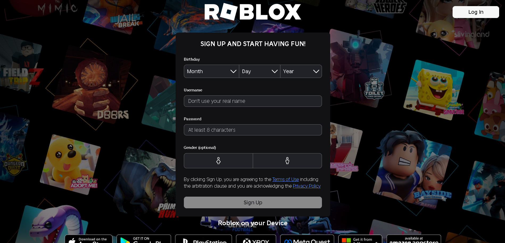
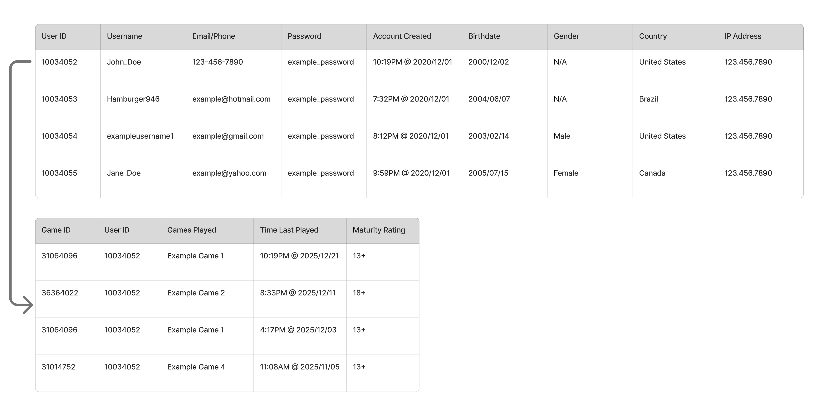

Module 8. Data Walkthrough and Critique
An analysis on the data collection and critique of their ethics on Roblox.
THEA3135, Richard Lau
The website I chose to analyze was Roblox.
https://www.roblox.com/
Roblox is a social platform that allows players to socialize, chat, and play games
with friends or strangers online. The action that leads to data entry would be creating an account.
The purpose of this sign-up is to create a unique user identity with a secure login password
that only the user has access to. This allows the user to distinguish themselves from other users.

Visible form fields:
- Birthdate (Month, date, and year)
- Custom Unique Username
- Password
- Gender
Inferred data the system likely collects:
- User IP address
- Time account was created
- Country/Location
Behavioural data it may track after sign-up:
- In-game movement
- Communication and chat interactions
- Game frequency

One ethical concern of the data collected regarding gaming behaviour could be its misuse.
When Roblox collects data on social interactions, purchasing behaviour, and playtime,
it allows Roblox to develop psychographic profiles. The risk of the mishandling of this
data could lead to dark patterns in monetization.
Another ethical concern would be privacy in how Roblox collects purchase history,
voice and chat histories, social interactions, and purchasing behaviours.
The issue would be that this data collection goes beyond what is required
for gameplay and would especially be detrimental if there was a security breach.
Here are three recommendations to improve data practices:
- Limit data collection to what is strictly necessary for gameplay and safety.
- Give users an easy option/tool to view, export, and permanently delete their data.
- Automatically delete sensitive data, such as voice and chat logs, after a set automatic period of time.